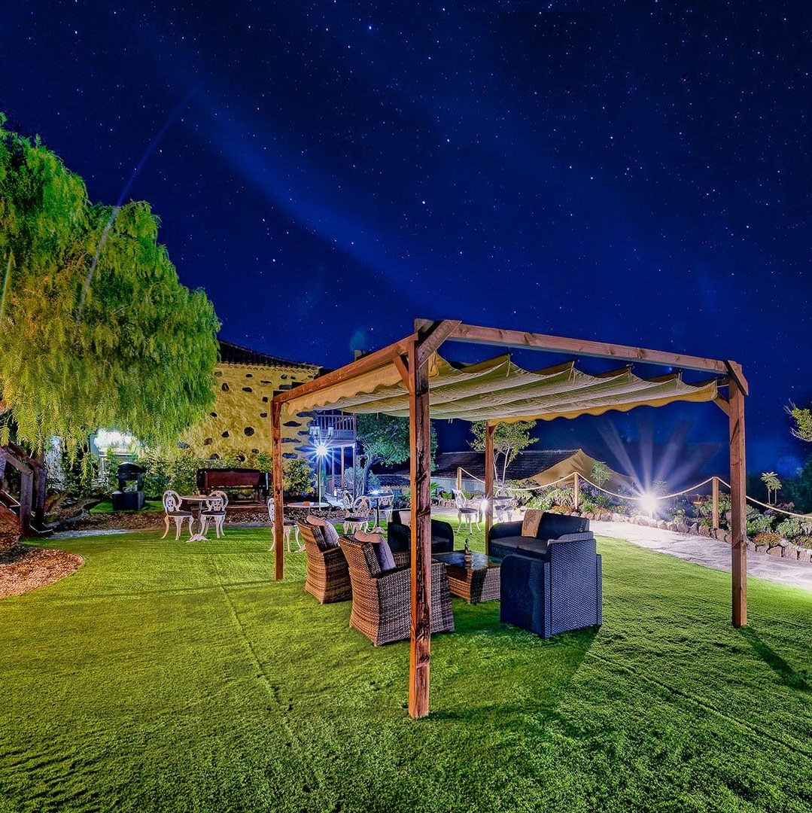
Hotel Rural Arona è un alloggio rurale di charme immerso nella natura, che offre un'esperienza autentica e profondamente legata alla storia di Tenerife.
La struttura nasce da un antico pajar canario, oggi considerato "Bien de Interés Cultural" e "Patrimonio Histórico", avendo conservato l'architettura originale canaria risalente al 1720.
Ogni spazio racconta la vita rurale tradizionale dell'isola, reinterpretata con sensibilità contemporanea per offrire comfort, silenzio e un forte senso di connessione con il territorio.
Passa la notte in un'autentica barrica di vino, immerso nella natura. Un'esperienza unica dove il design rustico incontra il comfort moderno.
Esperienza immersiva tra cielo e natura, perfetta per chi ama il silenzio e l'osservazione notturna.
Stessa magia, versione leggermente più compatta ma altrettanto suggestiva.
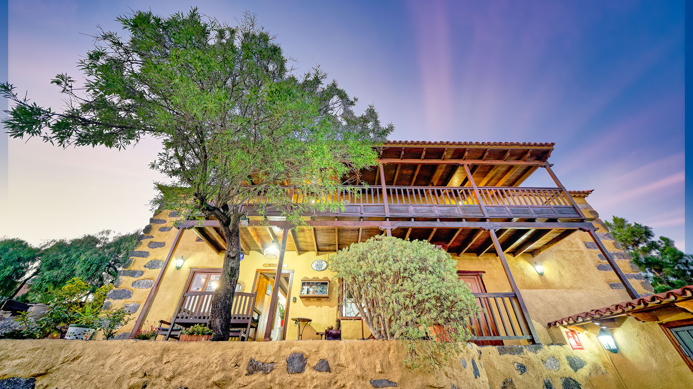
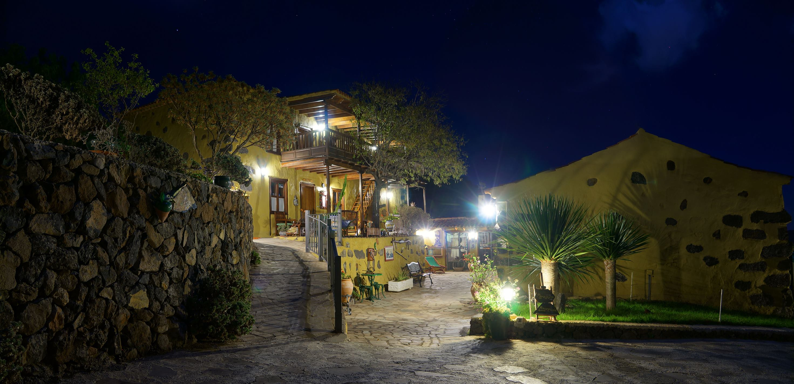
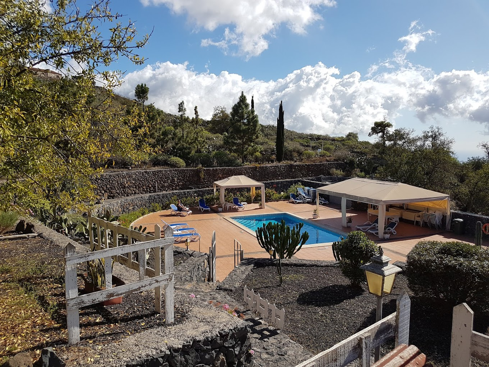
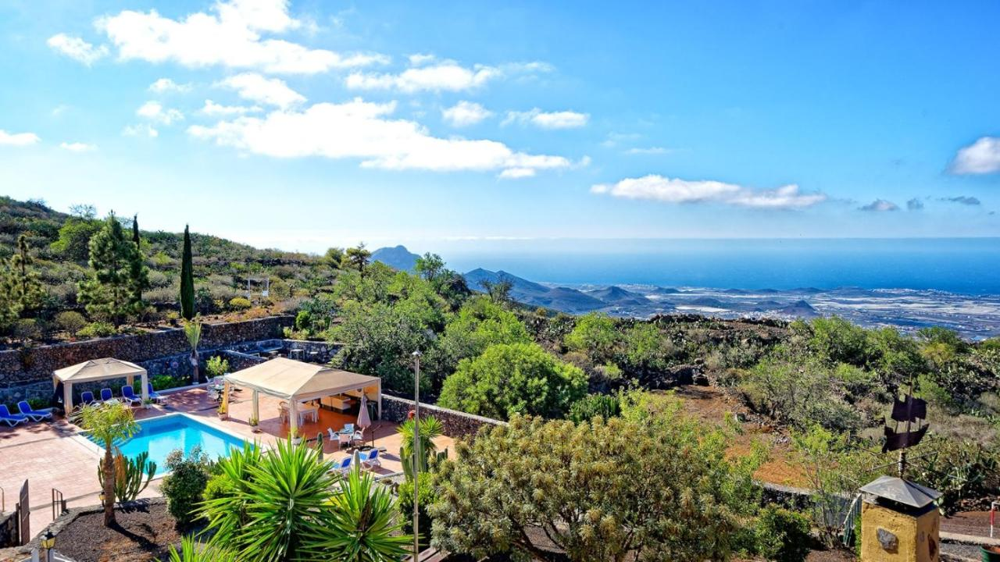
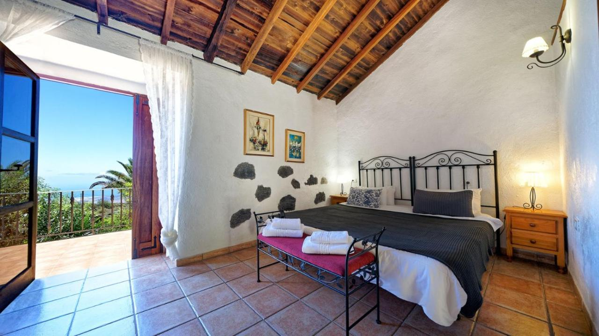
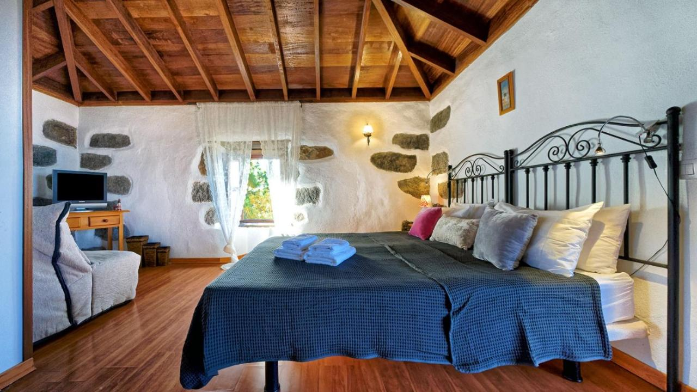
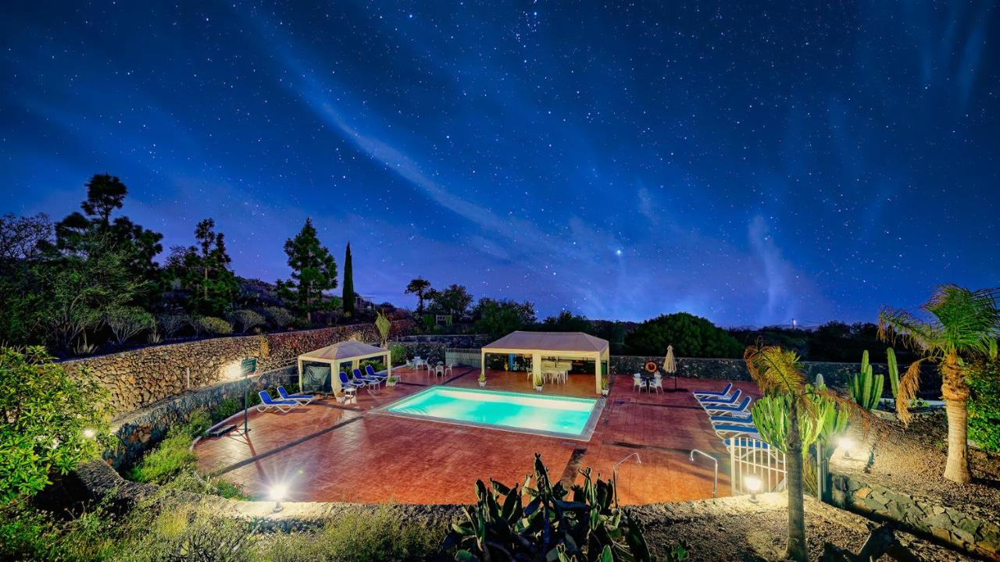
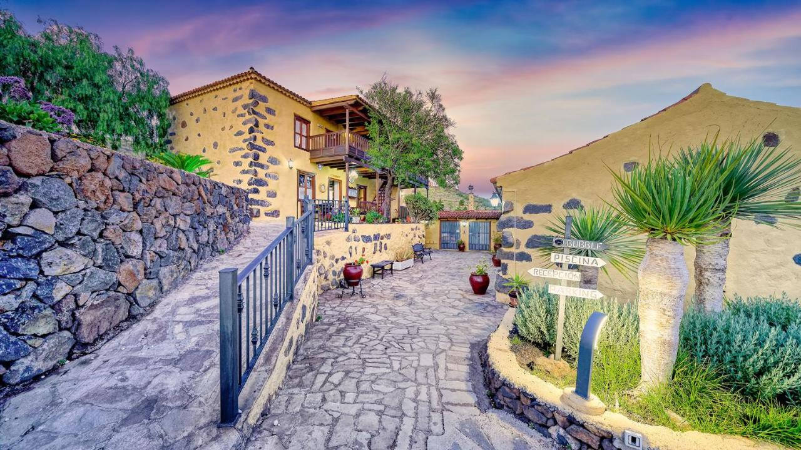
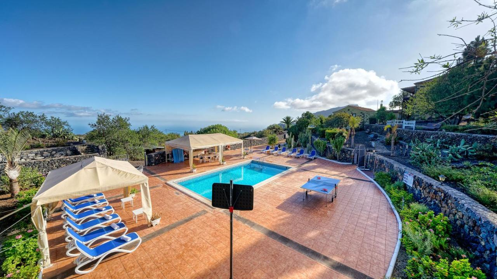
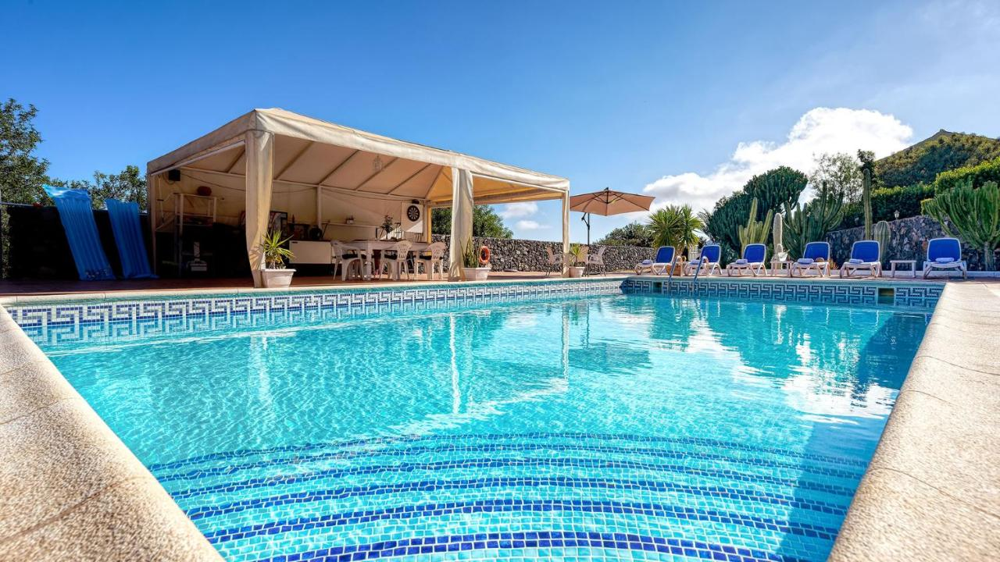
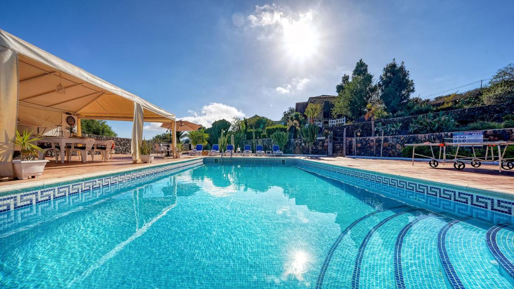
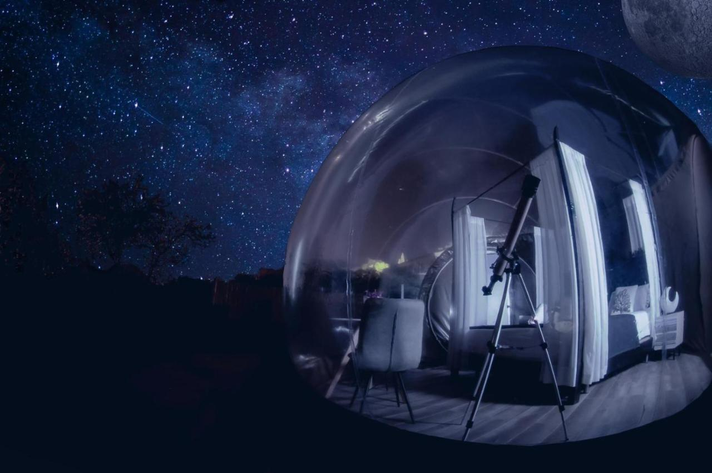
Hotel Rural Arona fa parte della selezione Alloggi Rurali di Lo Squalo ed è abbinabile su richiesta a:
Nella natura circostante
Cucina locale autentica
Per coppie, gruppi e retreat
Contattaci per disponibilità e prezzi
💬 Contattaci su WhatsApp